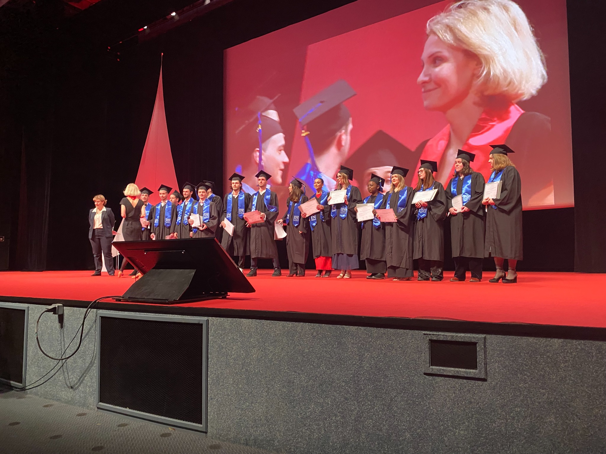

Humanités & management
Mobiliser les Humanités pour éclairer le Management
Étude de cas pédagogique diffusée par la CCMP.
Accéder à la CCMP ↗Portfolio académique
Une production pédagogique régulière et variée pour confronter les étudiants aux décisions et aux transformations des organisations.
Pédagogie par le réel
Les études de cas relient recherche, enjeux contemporains et apprentissage actif.

Humanités & management
Étude de cas pédagogique diffusée par la CCMP.
Accéder à la CCMP ↗Méthodologie
Étude de cas pédagogique diffusée par la CCMP.
Accéder à la CCMP ↗Inclusion
Étude de cas pédagogique diffusée par la CCMP.
Accéder à la CCMP ↗Méthodologie
Étude de cas pédagogique diffusée par la CCMP.
Accéder à la CCMP ↗Gestion de projet
Étude de cas pédagogique diffusée par la CCMP.
Accéder à la CCMP ↗RSE
Étude de cas pédagogique diffusée par la CCMP.
Accéder à la CCMP ↗Comportement organisationnel
Étude de cas pédagogique diffusée par la CCMP.
Accéder à la CCMP ↗Durabilité
Étude de cas pédagogique diffusée par la CCMP.
Accéder à la CCMP ↗Espaces de travail
Étude de cas pédagogique diffusée par la CCMP.
Accéder à la CCMP ↗